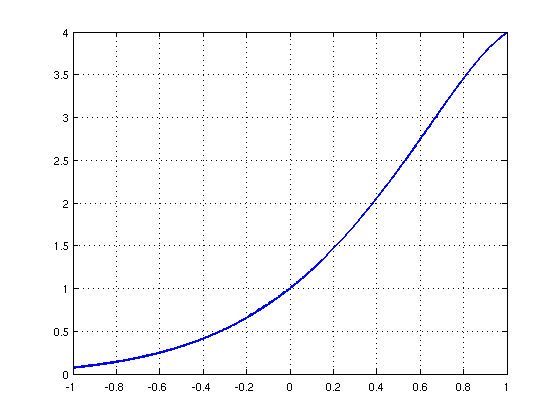
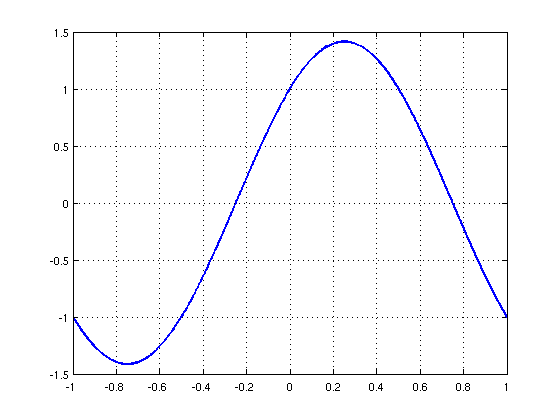
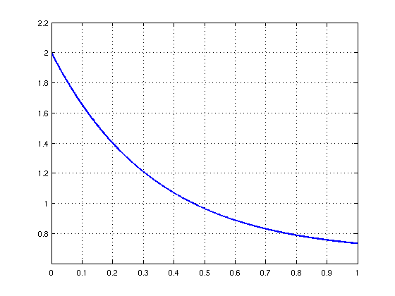

Wikipedia ODE examples
Mark Richardson, 27 September 2010
Contents
(Chebfun example ode/WikiODE.m)
Here, we solve three simple problems considered in the Wikipedia article on ODEs:
http://en.wikipedia.org/wiki/Linear_differential_equation
The problems are solved in the order they appear in the article, with boundary conditions imposed to make the solutions unique.
Problem 1: Second-order problem
L(y) = y'' - 4y' + 5y = 0
y(-1) = exp(-2)*cos(-1)
y(1) = exp(2)*cos(1)Begin by defining the domain d, chebfun variable x and operator N.
d = [-1 1];
x = chebfun('x',d);
N = chebop(d);
The problem has Dirichlet boundary conditions.
N.lbc = exp(-2)*cos(-1); N.rbc = exp(2)*cos(1);
Define the linear operator.
N.op = @(y) diff(y,2) - 4*diff(y,1) + 5*y;
Define the RHS of the ODE.
rhs = 0*x;
Solve the ODE using backslash.
y = N\rhs;
Analytic solution.
y_exact = exp(2*x).*cos(x);
How close is the computed solution to the true solution?
norm(y-y_exact)
ans = 6.4927e-12
Plot the computed solution.
plot(y,'linewidth',2), grid on
Problem 2: Simple Harmonic Oscillator
L(y) = y'' + pi^2*y = 0
y(-1) = -1
y'(1) = -pid = [-1 1];
x = chebfun('x',d);
N = chebop(d);
This problem has a Dirichlet BC on the left,
N.lbc = -1;
and a Neumann condition on the right.
N.rbc = @(u) diff(u) + pi;
Define the linear operator.
N.op = @(y) diff(y,2) + pi^2*y;
Define the RHS of the ODE.
rhs = 0*x;
Solve the ODE using backslash.
y = N\rhs;
Analytic solution.
y_exact = cos(pi*x)+sin(pi*x);
How close is the computed solution to the true solution?
norm(y-y_exact)
ans = 4.5112e-13
Plot the computed solution.
plot(y,'linewidth',2), grid on
Problem 3: First-order problem
L(y) = y' + 3*y = 2
y(0) = 2d = [0 1];
x = chebfun('x',d);
N = chebop(d);
First-order problems require only one boundary condition.
N.lbc = 2;
Define the linear operator.
N.op = @(y) diff(y) + 3*y - 2;
Define the RHS of the ODE.
rhs = 0*x;
Solve the ODE using backslash.
y = N\rhs;
Analytic solution, usually found with integrating factors.
y_exact = 2/3 + 4/3*exp(-3*x);
How close is the computed solution to the true solution?
norm(y-y_exact)
ans = 1.8245e-15
Plot the computed solution
plot(y,'linewidth',2), grid on